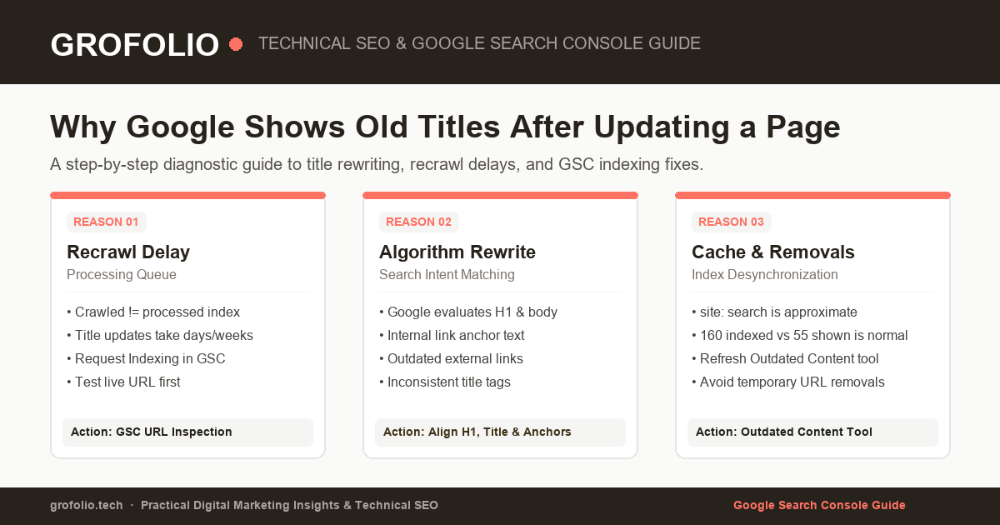
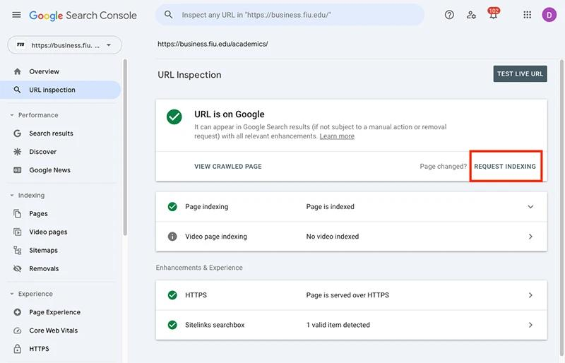
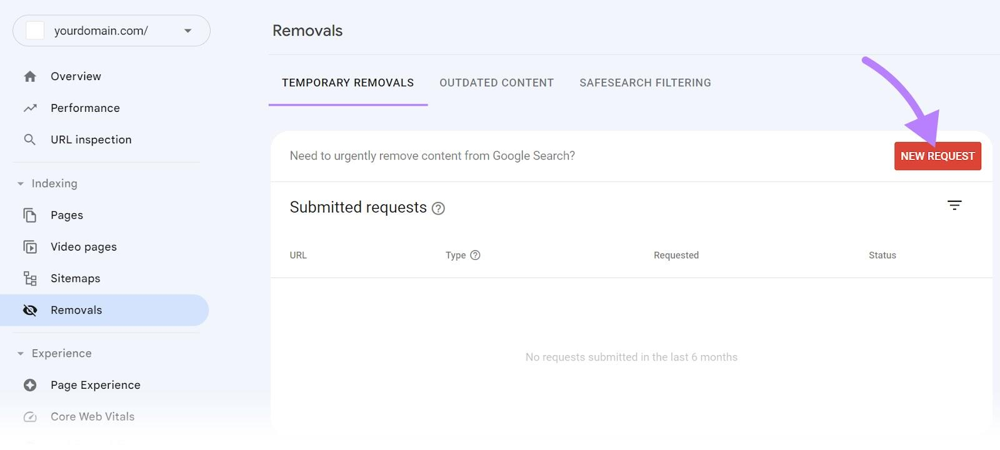
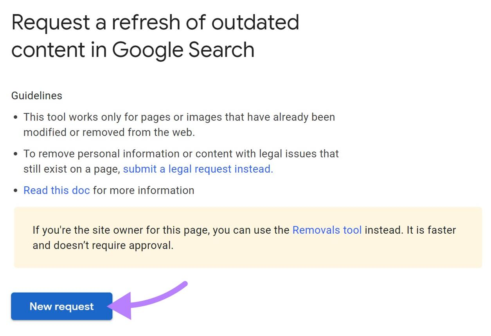

Why Google Shows Your Old Title Even After You Update Your Page
You've refreshed your blog post, rewritten the title tag, and updated your H1. Everything looks pristine on your live site. Yet, when you search on Google, the outdated title stubbornly persists. Here is why it happens and the step-by-step fix.

The short explanation: Google showing an old title usually boils down to two factors: either Google hasn't fully re-crawled and re-rendered the page in its indexing tier, or its algorithmic snippet generator has rewritten your title link using your H1, internal anchor text, or historical signals.
Even more confusing, Google Search Console might report 160 indexed URLs, while a site: search displays only 55 URLs. Some of those results may also contain outdated titles or old snippet snippets.
So, what is actually happening behind the scenes, and how can you systematically resolve it?
Why Google still shows your old title
1. Google has not fully processed your updated page
When you update a webpage, Google needs to recrawl, re-render, and re-index it before reflecting changes in search results.
Even if Google has crawled your page recently, updating the serving index and title link cache can take anywhere from a few days to a couple of weeks depending on your site's crawl budget and authority.
2. Google automatically rewrites title links
Google does not always display the exact HTML <title> you specify. The search engine dynamically generates title links based on several page signals:
- The HTML
<title>tag - The main
<h1>and secondary heading elements - Open Graph titles (
og:title) - Prominent visual text on the page
- Internal link anchor text pointing to the page
- External backlinks and citations
If Google's algorithms determine that another element or anchor phrase better represents the page for a user's search query, it generates an alternate title link automatically.
How to fix Google showing an old title
Step 1: Check your HTML title tag
Inspect your live page source and verify that the updated title is present in the rendered HTML:
<title>Why Google Shows Old Titles After Updating a Page</title>Check for duplicate title tags, cached SEO plugin configurations, or client-side JavaScript issues that might overwrite the title after initial load.
Step 2: Align your title tag and H1
Make sure your HTML title, visible H1 heading, and Open Graph metadata communicate the exact same topic:
- Title tag: Why Google Shows Old Titles After Updating a Page
- H1 heading: Why Google Shows Old Titles After Updating a Page
- OG title: Why Google Shows Old Titles After Updating a Page
They do not need to be 100% identical, but strong semantic alignment removes ambiguity and stops Google from substituting an alternate heading.
Step 3: Update internal links
Check your homepage, category menus, and related blog posts. If internal links still use the old title as their anchor text, Google will continue associating the page with that legacy phrase. Update your anchor text site-wide to reflect the new direction.
Step 4: Request indexing through Google Search Console

If you have updated the page, encourage Googlebot to recrawl it:
- Open Google Search Console.
- Select the URL Inspection tool in the top search bar.
- Enter your updated blog URL.
- Review the indexed version, then click Test Live URL.
- If the live test confirms the updated content is accessible, click Request Indexing.
This places your URL in Google's high-priority crawl queue. While it does not guarantee an immediate snippet refresh, it expedites processing significantly.
Step 5: Verify the crawled content
After requesting indexing, check whether Google's crawled version reflects your updated content.
If Google sees the updated title in the crawled HTML but continues showing an older or rewritten phrase in search results, investigate algorithmic title rewriting rather than repeatedly requesting indexing.
What about 160 indexed URLs but only 55 results in a site search?
This is another frequent source of confusion for webmasters.
Google Search Console reports total indexed URLs based on its complete database records. A site:yourdomain.com query, by contrast, is designed as an exploratory query—not an exhaustive audit tool. Google truncates and omits duplicate or low-scoring query results from the site: search display.
For example:
- Search Console: 160 indexed URLs
- Google site: search: 55 displayed URLs
This disparity does not mean 105 pages have been dropped or de-indexed. Always rely on Google Search Console's Page Indexing Report as your source of truth.
Final option: Google Search Console Removals
If your page has been updated but Google continues displaying sensitive, broken, or severely outdated information in snippets, you can consider GSC's Removals tool as a tactical remedy.

Navigate to: Google Search Console → Indexing → Removals.
Temporary removals
This feature hides a URL from Google Search results for roughly six months. However, exercise caution: it suppresses the entire page from search results, eliminating organic impressions and traffic while active.
Refresh outdated content
If outdated information is no longer present on your live page but continues appearing in Google Search snippets or cached summaries, you can submit a request through Google's Outdated Content tool.

Important: The Removals tool is not a magic wand to force title tag updates. Google recommends recrawling the page via URL Inspection and allowing standard algorithmic processing to update snippet representations organically.
Summary checklist
- Verify your HTML
<title>tag directly in page source. - Align your
<title>,<h1>, andog:titlesemantically. - Update internal link anchor text across your website.
- Test the live URL in GSC and click Request Indexing.
- Rely on Search Console indexing data rather than
site:queries. - Give Google's processing pipelines 3 to 14 days before taking further measures.